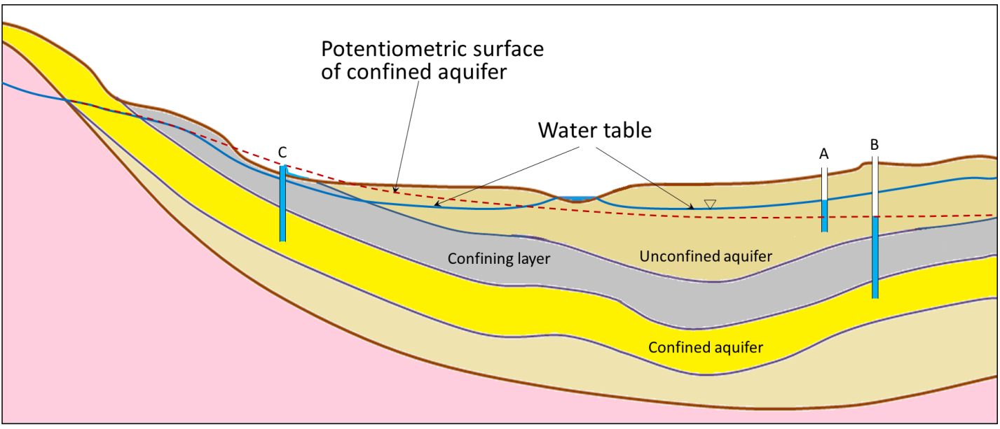
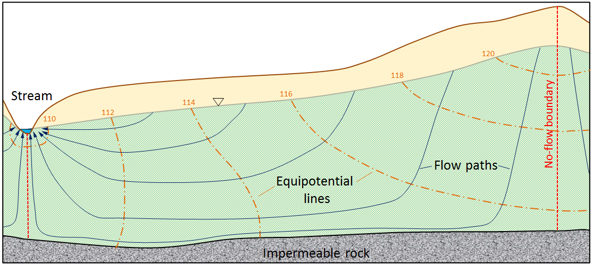
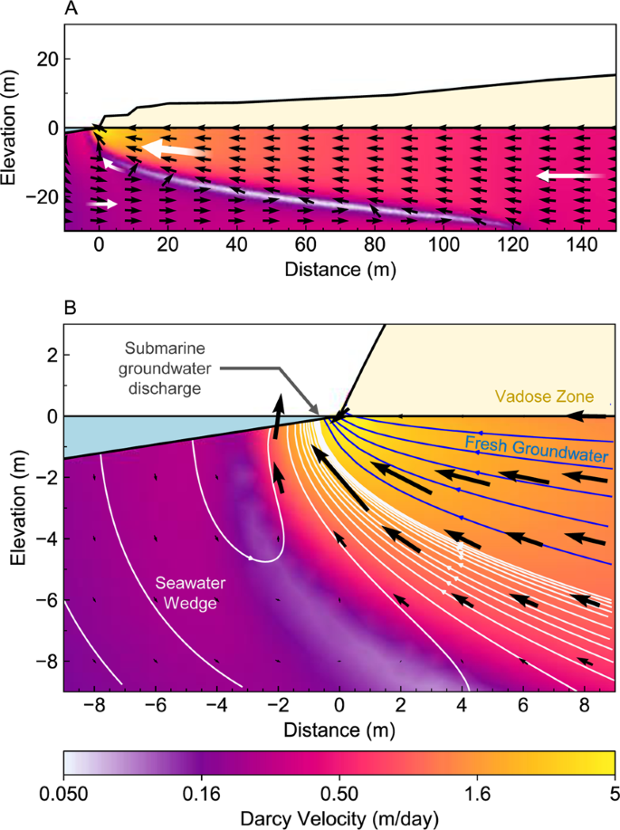
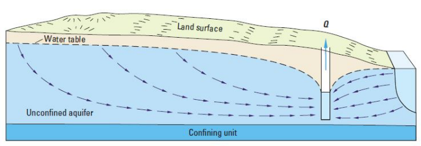
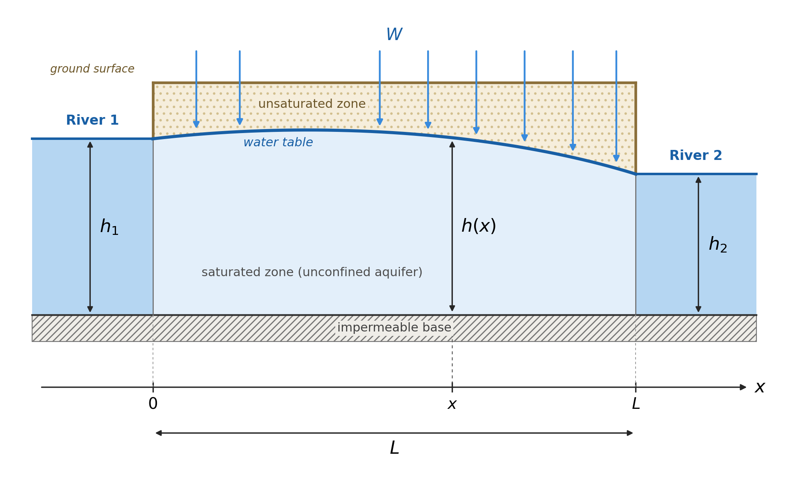
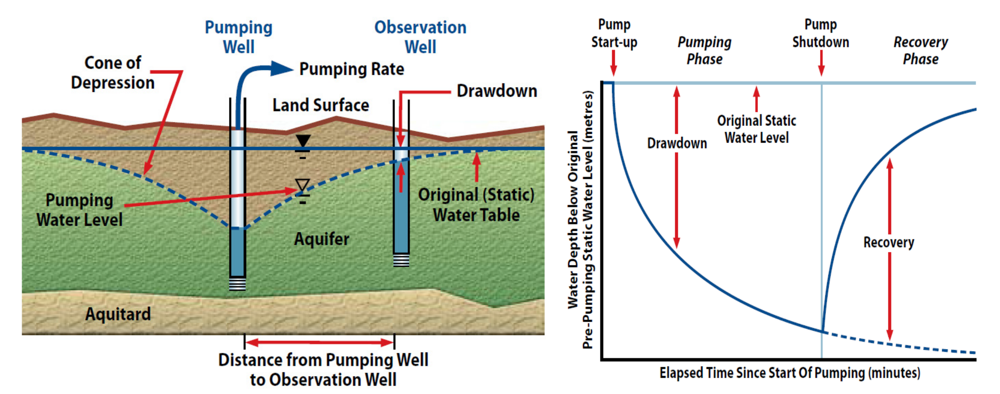
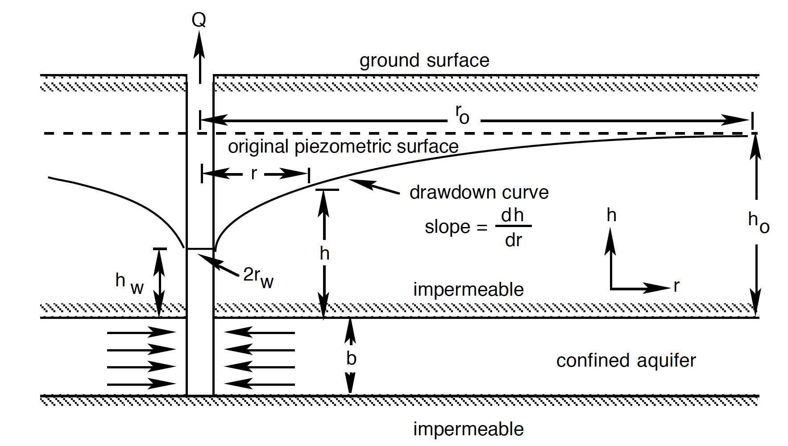
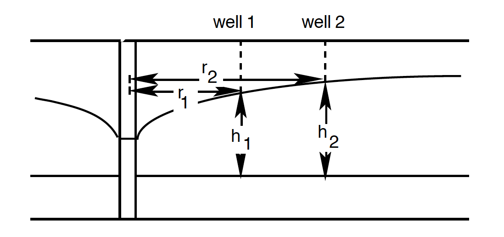
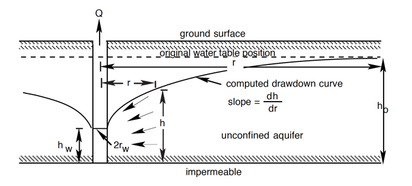
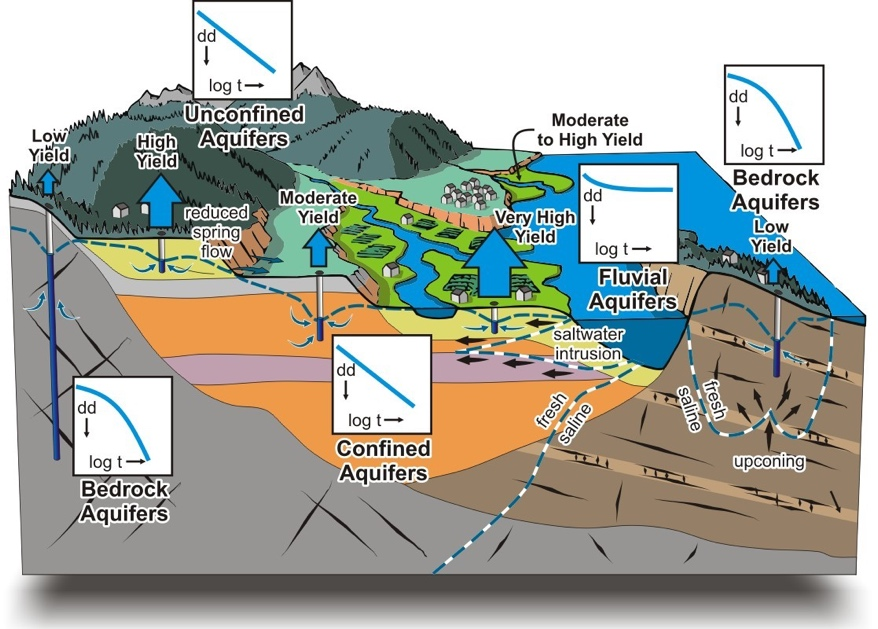

2.3. How we measure and understand water movement#
A concept that derives from the idea of a distribution of hydraulic head is the distribution of a piezometric or potentiometric surface across a groundwater catchment. This is the level to which water would rise in a well that taps the aquifer (Fig. 2.18). In an unconfined aquifer, this is just the water table – or where the water is found. A confined aquifer has no water table, because it is full and the water is under pressure; instead we can imagine the level the water would rise to if it were free to do so, which represents the hydraulic head within the confined aquifer. More intuitively, if we were to drill a well into the aquifer, the water level would rise to this level (which differs from the actual water table itself). This is called the potentiometric surface (or piezometric surface) and is given by the red dashed line in Fig. 2.18. Sometimes this is above the actual surface and indicates that if you drilled a well into that aquifer, the water level would come up above the surface.

Fig. 2.18 The structure of an aquifer and the potentiometric surface. Notice how differences between the water table and potentiometric surface relate to sub-surface structure.#
We can draw lines of equal hydraulic head in a groundwater system, which are known as equipotential lines, and use these to draw flow lines, which (in an isotropic aquifer) cross the equipotential lines at right angles. This allows us to create a map like Fig. 2.19 showing where and how groundwater will move. What is clear from this sort of a figure is that groundwater doesn’t always move in a straight line. We can do a simple calculation for the amount of time it would take groundwater to move 100 metres from a recharge area to a discharge area (e.g. a stream) but in reality, we can see the flow lines/paths aren’t linear. Furthermore, to calculate things like the flow velocity in a groundwater system, we need to know aspects of the system like the permeability or hydraulic conductivity very well.


Fig. 2.19 The structure of an aquifer. Flow lines cross the lines of equal hydraulic head at right angles. Water flows from high to low head, not necessarily from high to low elevation, so in discharge areas it flows upwards.#
What we can say about the overall direction of groundwater flow is that it is always going from high hydraulic head to low hydraulic head, and typically this is mimicking the overland topography - there are exceptions to this but in general high hydraulic head exists at higher overall topographic elevations and lower hydraulic head at lower topographic elevations. Whether rivers or streams are gaining or losing water depends on the local changes in hydraulic head near to the stream/river.
Saline Intrusion#
An example of where there can be changes in hydraulic head leading to changes in groundwater flow is near wells, where abstraction locally lowers the hydraulic head around the well and draws groundwater towards it, sometimes reversing the natural direction of flow. This is a particular problem near the coast, where saline groundwater can be drawn into freshwater aquifers, a process known as saline intrusion. Groundwater beneath the land surface is recharged from rain, and is largely ‘fresh water’ and could be suitable for drinking. Groundwater beneath the ocean is salt water, and unless you undertake some serious desalination activities, is not suitable for drinking. Between the fresh subsurface groundwater and the salt subsurface groundwater, there is a mixing zone known as the freshwater-saltwater interface (Fig. 2.20). Because seawater is denser than fresh water (~1025 vs 1000 kg m⁻³), fresh groundwater floats on the saline groundwater beneath it. To a first approximation the interface lies about 40 m below sea level for every 1 m the water table stands above sea level, so a small drop in the water table from pumping causes a large rise in the interface.


Fig. 2.20 An example of a freshwater-saltwater interface.#
Like all groundwater systems, the flow of groundwater goes from high hydraulic head to low hydraulic head. Every day – indeed twice a day – the tides move the envelope of seawater such that there is greater hydraulic head on the salt groundwater, pushing it further inland. When the tides move the envelope of water away from the coast, the freshwater will move back towards the ocean. Thus the freshwater-saltwater interface moves back and forth with the tides.
On top of this tidal cycle, there are two larger scale things happening. First, sea level is rising, due to the melting of ice and the thermal expansion of the ocean water. This increases the hydraulic head on the salt-groundwater, pushing it inland. Second, we have a large groundwater footprint, and water is being removed from coastal freshwater aquifers for agriculture and drinking and all the other things we said we need groundwater for in Groundwater Systems. This lowers the hydraulic head in the coastal aquifers and drives more salt-groundwater inland (Fig. 2.21).

Fig. 2.21 Seawater can recharge an aquifer and contaminate it with salt water if we extract too much water near the coast. This problem will be exacerbated by sea-level rise, which will increase the hydraulic head on the saline side.#
Applying Groundwater Principles: Water Table Between Two Rivers#
Let’s picture an unconfined aquifer lying between two rivers a distance \(L\) apart, on a flat, horizontal, impermeable base.
The first thing we can do is draw a sketch of the problem (Fig. 2.22).

Fig. 2.22 A sketch of the water table height between two rivers.#
\(x\) runs from \(0\) (river 1) to \(L\) (river 2).
\(h(x)\) is the water table height above the base, so it is also the saturated thickness.
\(K\) is the hydraulic conductivity, uniform in space.
\(W\) is the recharge rate, a volume per unit ground area per unit time.
Boundary conditions: \(h(0)=h_1\) and \(h(L)=h_2\).
Flow is steady and one-dimensional in \(x\), per unit width in \(y\).
Real flow in an unconfined aquifer is two-dimensional (in the \(x\)–\(z\) plane), and the water table is a free surface whose position is part of the answer. When the water table is gently sloping (\(L \gg h\)), Dupuit’s two simplifications are reasonable:
Flow is essentially horizontal, so equipotentials are nearly vertical.
The hydraulic gradient is the same at every depth in a vertical section.
The specific discharge (\(q = Q/A\)) then comes straight from Darcy’s law (Eq. (2.4)):
Multiplying by the thickness \(h\) gives the discharge per unit width of aquifer:
\(q_w\) is positive in the \(+x\) direction, and the minus sign means flow runs down the head gradient.
At steady state, conservation of mass says that any change in \(q_w\) along a slice of aquifer must be supplied by recharge falling on that slice:
Eq. (2.12) is non-linear because of the \(h \dv{h}{x}\) term. The trick is to notice that, by the chain rule, \(h \dv{h}{x} = \frac{1}{2} \dv{(h^2)}{x}\), so if we work with \(h^2\) instead of \(h\) the equation becomes linear. Substituting this into Eq. (2.13):
Integrating twice gives
and applying the boundary conditions \(h(0)=h_1\) and \(h(L)=h_2\) fixes \(c_2 = h_1^2\) and \(c_1 = \frac{h_2^2 - h_1^2}{L} + \frac{WL}{K}\), so that
The structure is worth noticing:
The first two terms are a straight line in \(h^2\) joining \(h_1^2\) to \(h_2^2\). This is the no-recharge (\(W=0\)) solution.
The last term is a parabola that is zero at both ends and peaks at \(x = L/2\). This is the extra mound that recharge creates and gives us (for values of \(h_1\) and \(h_2\) and \(L\) in a particular environment) the overall dimensions and shape of the water table.
We can use this to determine where the groundwater divide is. At the divide the flow changes direction, so \(q_w=0\), which means \(\dv{h}{x}=0\) and hence \(\dv{(h^2)}{x}=0\). Differentiating Eq. (2.15) and setting it to zero gives the position of the divide, \(x_d\):
If the two rivers are at the same level (\(h_1 = h_2\)), the divide sits exactly halfway between them. Otherwise it is pushed towards the higher river (if \(h_1 > h_2\), then \(x_d < L/2\)), so more than half of the recharge drains to the lower river. If \(x_d\) falls outside \(0 \le x \le L\) (weak recharge, or a large difference in river level), there is no divide at all: water flows across the whole aquifer towards the lower river.
Determining Hydraulic Conductivity#
We can determine hydraulic conductivity by using tracer tests - that is with two wells we can see how quickly a tracer gets from one well to the other well, giving us average groundwater velocity, which we can use with an estimate of the porosity to get the specific discharge or Darcy velocity. Once we know that and the hydraulic gradient, we can calculate hydraulic conductivity. Another way that we can determine the hydraulic conductivity and other key properties of a groundwater system is to perform a pumping test (Fig. 2.23). During a pumping test we remove water from one well and monitor the drawdown of water in a second well that is some (known) distance from the first well.

Fig. 2.23 A schematic of a pumping test for an unconfined aquifer (left) and an idealised drawdown curve for this test (right). Images from the Government of Newfoundland and Labrador guidelines for aquifer testing.#
Let’s consider the idealised case where we are performing a pumping test in a confined aquifer (the maths for an unconfined aquifer is slightly different, because the saturated thickness changes as the water table is drawn down). We can define several geometric parameters associated with our pumping test. For example, our pumping rate will be \(Q\), the thickness of our aquifer is \(b\), and the hydraulic head (the height of the piezometric surface above the base of the aquifer) is \(h\). A schematic of this is shown below in Fig. 2.24.


Fig. 2.24 The geometry of an idealised confined aquifer in a pumping test.#
In an idealised sense, the drawdown will be conical in shape (a cone of depression), and we can describe that cone in terms of the change in height of its side with radius \(\left( \dv{h}{r} \right)\). This is the slope of the piezometric surface at radius \(r\) from the centre of the pumping well. A schematic of this is given in Fig. 2.25. The drawdown of the piezometric (or potentiometric) surface results from the reduction of pressure in the aquifer due to pumping.


Fig. 2.25 The cone of depression around a pumping well, measured in two observation wells at distances \(r_1\) and \(r_2\) from the pumping well, where the heads are \(h_1\) and \(h_2\).#
To continue this calculation we have to make a few assumptions:
The aquifer is homogeneous (the same everywhere) and isotropic (the same in all directions)
The well penetrates the whole of the confined aquifer, so the flow is horizontal
We pump at a constant rate \(Q\), and the cone of depression has stopped changing (the flow is at steady state).
If we consider a cylinder of the aquifer of radius \(r\), and height \(b\) around the well, then if we apply Darcy’s Law, the rate of flow out of the well (and into the well from the groundwater) – \(Q\) – is given by
Where \(A\) is \(2 \pi rb\). Notice there is no minus sign, unlike in Darcy’s law (Eq. (2.4)): here we take \(Q\) as positive for flow towards the well, which is in the direction of decreasing \(r\), while \(h\) increases with \(r\). This means all together:
We can then separate our variables:
And integrate both sides from \(h_w\) to \(h_o\) and \(r_w\) to \(r_o\):
But because \(\frac{Q}{2 \pi b K}\) is constant, we can bring that out of the integral:
Which can be solved to give:
Which we can rearrange to make something called the Thiem equation:

Fig. 2.26 The geometry of an idealised unconfined aquifer in a pumping test, showing the drawdown curve and its slope \(\dv{h}{r}\), the well radius \(r_w\), the head at the well \(h_w\), and the undisturbed head \(h_o\).#
Here \(r_w\) is the radius of the well and \(h_w\) is the head in the well, while \(r_o\) is the radius of influence of the pumping (the distance beyond which there is no drawdown) and \(h_o\) is the undisturbed head. Fig. 2.26 shows the equivalent problem for an unconfined aquifer, where the saturated thickness is \(h\) rather than the fixed \(b\); the same steps then give \(Q = \pi K \frac{h_o^2 - h_w^2}{\ln(r_o/r_w)}\). It follows that if \(Q\) is fixed, and \(b\) and \(K\) don’t change, there should be a linear relationship between \(h\) and \(\ln{r}\).
In most cases we are using a certain pumping rate (\(Q\)) and then measuring the response of the cone, and we want to understand the hydraulic conductivity of the system (and from it, the permeability). The same result holds between any two radii, so in practice we measure the heads \(h_1\) and \(h_2\) in two observation wells at distances \(r_1\) and \(r_2\) from the pumping well (Fig. 2.25), and rearrange Eq. (2.23) to solve for hydraulic conductivity:
One of the major assumptions in a test like this is that we are at steady state, and the cone shape and size isn’t changing with time (adding in a time dependence would change the maths quite a bit). This isn’t strictly true as the longer we pump a groundwater system, the more the cone will widen and deepen. However, at some point you do reach a point where the rate of change is really very small over time, and we can assume a ‘quasi’ steady state.
We can think of lots of ways this will be different if the geometry of the subsurface means our assumptions don’t hold. But it is also different when there are very different hydraulic conductivities involved (Fig. 2.27)!

Fig. 2.27 Hydraulic conductivity can vary a lot with geology!#